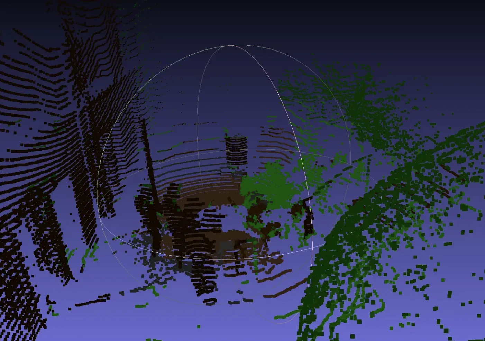

The problem
Autonomous navigation systems are suboptimal in vegetated environments due to their inability to distinguish between traversable and untraversable vegetation. This limitation has significant impact on applications like environmental monitoring, search and rescue, and agricultural automation where robots need to navigate through dense vegetation efficiently.
Simon is a Unitree Go2-W that will be used for autonomous navigation for heavily vegetated environments. Unlike traditional perception-based methods that treat all vegetation as untraversable obstacles, Simon uses a novel approach that combines 2D and 3D perception with proprioceptive sensors to distinguish between traversable and untraversable vegetation.
This fusion of perception and proprioception enables Simon to navigate through dense vegetation more efficiently, rather than taking suboptimal paths around obstacles. By understanding the true traversability of different vegetation types, Simon can find optimal paths that maximize efficiency while maintaining safety.


Carrying on Patrick's Mission
Building upon the foundation laid by Patrick, Simon, a legged wheeled robot, will carry on Patrick's mission of autonomous environmental exploration.
Simon's added agility and capability from the legs will allow it to navigate through dense vegetation more effectively. The legged-wheeled hybrid design provides enhanced mobility compared to purely wheeled platforms, enabling traversal over obstacles and through dense vegetation while maintaining efficiency on clear terrain.
The system is currently in active development, with the goal of enabling reliable autonomous operation in heavily vegetated environments. The project demonstrates the feasibility of using sensor fusion to improve navigation, and the combination of perception and proprioception provides a more accurate understanding of terrain traversability than either modality alone.
Similar work

Patrick
Autonomous environmental monitoring robot for forested areas using LiDAR, camera sensor fusion, and adaptive density drive.
Proprioceptive Traversal
Robotic navigation where instead of treating all obstacles as untraversable, their cost are estimated for an initial path. Upon collision, the cost of the obstacle is updated and the path is recomputed.

Cheap Opensource Robot Dog (CORD)
Open-source quadruped robot platform designed for educational purposes and affordable robotics research.